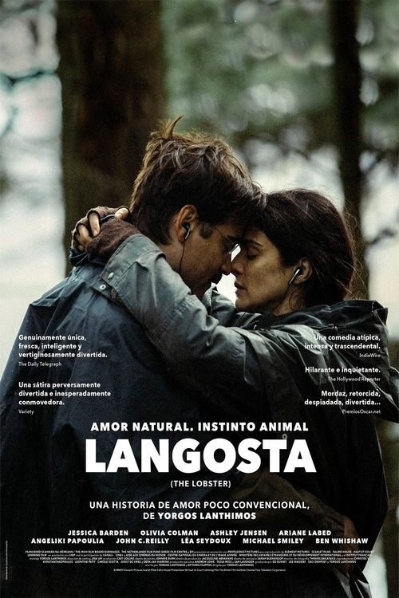

Langosta (2015)
Sinopsis Rápida
En un futuro distópico, los solteros son transformados en animales y obligados a encontrar pareja o enfrentarse a una cruel transformación definitiva. ¿Conseguirás sobrevivir al absurdo y encontrar el amor?
Sinopsis Detallada
Langosta presenta una sátira oscura y surrealista sobre la presión social de encontrar pareja. David, un hombre viudo, se ve obligado a unirse a un hotel donde los solteros son transformados en animales si no encuentran pareja. La película explora temas de soledad, identidad, y el absurdo de las convenciones sociales a través de situaciones bizarras y humor negro. La absurda premisa da paso a una crítica social mordaz e inteligente sobre las relaciones humanas y la búsqueda del amor en una sociedad que impone normas restrictivas. La dirección de Yorgos Lanthimos es destacada por su estilo particular y la excelente actuación de Colin Farrell.
¿Por qué tenés que verla?
- Una comedia oscura e inteligente que te hará reír y reflexionar.
- La singular dirección de Yorgos Lanthimos crea una atmósfera única e inolvidable.
- Su crítica social mordaz sigue resonando en la actualidad, explorando la presión social de las relaciones.
- Una premisa absurda y original que te atrapará desde el principio.
Idea Extra
Análisis del simbolismo animal en Langosta: un estudio de la identidad y las relaciones humanas.